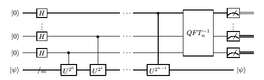
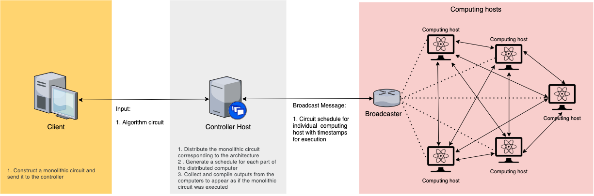
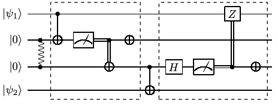

Distributed Quantum Phase Estimation Algorithm¶
Quantum phase estimation is a quantum algorithm which is used to estimate the phase (or eigenvalue) of an eigenvector of a unitary operator. If we consider a unitary matrix \(U\) and a quantum state \(|\psi \rangle\) such that \(U|\psi \rangle =e^{2\pi i\theta }\), the algorithm estimates the value of \(\theta\) with high probability within additive error \(\varepsilon\).
The below is the circuit diagram for quantum phase estimation with the Unitary \(U\) and eigenstate \(|\psi\rangle\).

Here, we will explain the execution of distributed quantum phase estimation algorithm with two computing hosts and one controller host using Interlin-q. We let the first computing host QPU_1 possess all the qubits which are set in the state \(|0\rangle\) from the above image and the second computing host QPU_2 would possess the single qubit which is set in the eigenstate \(|\psi\rangle\).
Introduction of Interlin-q¶
Simulated Architechture¶
The simulated architechture of Interlin-q can be seen in the image below:

The controller host gets the monolithic circuit as an input from the client, converts it to a distributed circuit and generates schedules from it for individual computing hosts and broadcasts it to them. The controller host and all the computing hosts share a global clock. When the computing hosts receive the broadcast, they extract their schedule from it and perform the operations in the schedules according to the global clock and the timestamps on the operations. The final results are sent over to the controller host from all the computing hosts for further processing.
Conversion of monolithic to distributed circuit¶
The monolithic circuit is a circuit which is designed to be implemented by a single quantum computer. To implement this same algorithm using multiple interlinked quantum computers, this monolithic circuit needs to be converted to a distributed circuit over a given topology of the interlinked quantum computers.
This distribution is performed by the controller host, by analysing the input monolithic circuit and searching for any control gates where the control and target qubits lie in separate computing host. If any such control gate is found, it is replaced by using a Cat-circuit shown in the image below. The controller host generates the distributed circuit by replacing all such control gates.

Here the quantum state \(|\psi_1\rangle\) lies with the first computing host and the quantum state \(|\psi_2\rangle\) lies with the second computing host. A control gate with \(|\psi_1\rangle\) as control qubit and \(|\psi_2\rangle\) as the target qubit is replaced with the circuit shown, which implement a non-local control gate. It is necessary for both the computing hosts to share an EPR pair.
Distributed Scheduler and Broadcasting¶
The controller host forms a distributed schedule of operations according to timestamps for individual computing hosts using the distributed circuit. The operations are timestamped after considering the amount of time the operation would take to be performed on the specific computing hosts. These operations are then broadcasted to all the computing hosts.
Executing the distributed algorithm¶
The computings hosts receive the broadcasted schedules and extract their schedule from it. The controller hosts and all the computing hosts share a Clock object, which enable them to perform operations according to the schedule in synchronization. Once the operations are performed, and resulting error or successful measurements are reported back to the controller host, who further processes the output for the client.
Code implementation¶
Now we discuss how to implement distributed quantum phase estimation algorithm using Interlin-q
Step 1: Import libraries.¶
First we import all the necessary libraries. Interlin-q is build using the python framework QuNetSim which is a python software framework that can be used to simulate quantum networks up to the network layer.
[ ]:
import sys
import numpy as np
sys.path.append("../")
from qunetsim.components import Network
from qunetsim.objects import Logger
from interlinq import (ControllerHost, Constants, Clock,
Circuit, Layer, ComputingHost, Operation)
Logger.DISABLED = True
Step 2: Create monolithic circuit of Quantum Phase Estimation¶
Instructions on creating a circuit¶
The below are the functions used to create a monolithic circuit in Interlin-q framework, which will act as the client input. Circuit objects in Interlin-q are constructed from different Layer objects, where every layers contains Operation objects which are to be performed together.
1. Operations¶
Operation objects are commands which instruct the computing hosts regarding the operations to be executed. The different types of Operation objects are PREPARE_QUBITS, SINGLE, TWO_QUBIT, CLASSICAL_CTRL_GATE, MEASURE, SEND_ENT, REC_ENT, SEND_CLASSICAL and REC_CLASSICAL.
A sample operation to implement a CNOT gate across one computing host is shown below:
op = Operation(
name=Constants.TWO_QUBIT,
qids=[control_qubit_id, target_qubit_id],
gate=Operation.CNOT,
computing_host_ids=[computing_host_id])
A sample operation to implement a CNOT gate across two computing host is shown below:
op = Operation(
name=Constants.TWO_QUBIT,
qids=[control_qubit_id, target_qubit_id],
gate=Operation.CNOT,
computing_host_ids=[computing_host_id_1, computing_host_id_2])
2. Layers¶
Layers are composed of multiple operations which are to be performed across different computing hosts at the same time. A Layer object that would consist of Operation objects op1, op2 and op3 can be created using the command below:
layer_1 = Layer([op1, op2, op3])
3. Circuit¶
A Circuit object is composed of multiple layers of operations and we also provide the topology of the distributed circuit as an input. A Circuit object that would consist of Layer objects layer1, layer2 and layer3 can be created using the command below. In this command, q_map is the topology of the distributed circuit, which informs us regarding the computing hosts and the corresponding qubits that are involved in the circuit.
q_map = {
'QPU_1': ['q_0_0', 'q_0_1', 'q_0_2', 'q_0_3'],
'QPU_2': ['q_1_0']
}
circuit = Circuit(q_map, [layer1, layer2, layer3])
Creating the circuit for Quantum Phase Estimation Algorithm¶
[7]:
def phase_gate(theta):
return np.array([[1, 0], [0, np.exp(1j * theta)]])
def inverse_quantum_fourier_transform(q_ids, computing_host_ids, layers):
"""
Performs inverse quantum fourier transform
"""
q_ids.reverse()
for i in range(len(q_ids)):
target_qubit_id = q_ids[i]
for j in range(i):
control_qubit_id = q_ids[j]
op = Operation(
name=Constants.TWO_QUBIT,
qids=[control_qubit_id, target_qubit_id],
gate=Operation.CUSTOM_CONTROLLED,
gate_param=phase_gate(-np.pi * (2 ** j) / (2 ** i)),
computing_host_ids=[computing_host_ids[0]])
layers.append(Layer([op]))
op = Operation(
name=Constants.SINGLE,
qids=[target_qubit_id],
gate=Operation.H,
computing_host_ids=[computing_host_ids[0]])
layers.append(Layer([op]))
return layers
[ ]:
def quantum_phase_estimation_circuit(q_map, client_input_gate):
"""
Returns the monolithic circuit for quantum phase estimation
algorithm
"""
layers = []
computing_host_ids = list(q_map.keys())
# Prepare the qubits on both computing hosts
ops = []
for host_id in computing_host_ids:
op = Operation(
name=Constants.PREPARE_QUBITS,
qids=q_map[host_id],
computing_host_ids=[host_id])
ops.append(op)
layers.append(Layer(ops))
# Setup the qubits by apply Hadamard gates on qubits of QPU_1
# and applying X gate to initialise qubit on QPU_2
ops = []
for q_id in q_map[computing_host_ids[0]]:
op = Operation(
name=Constants.SINGLE,
qids=[q_id],
gate=Operation.H,
computing_host_ids=[computing_host_ids[0]])
ops.append(op)
op = Operation(
name=Constants.SINGLE,
qids=[q_map[computing_host_ids[1]][0]],
gate=Operation.X,
computing_host_ids=[computing_host_ids[1]])
ops.append(op)
layers.append(Layer(ops))
# Apply controlled unitaries
for i in range(len(q_map[computing_host_ids[0]])):
max_iter = 2 ** i
control_qubit_id = q_map[computing_host_ids[0]][i]
target_qubit_id = q_map[computing_host_ids[1]][0]
for _ in range(max_iter):
op = Operation(
name=Constants.TWO_QUBIT,
qids=[control_qubit_id, target_qubit_id],
gate=Operation.CUSTOM_CONTROLLED,
gate_param=client_input_gate,
computing_host_ids=computing_host_ids)
layers.append(Layer([op]))
# Inverse Fourier Transform circuit
q_ids = q_map[computing_host_ids[0]].copy()
layers = inverse_quantum_fourier_transform(
q_ids,
computing_host_ids,
layers)
# Measure the qubits
ops = []
for q_id in q_ids:
op = Operation(
name=Constants.MEASURE,
qids=[q_id],
cids=[q_id],
computing_host_ids=[computing_host_ids[0]])
ops.append(op)
layers.append(Layer(ops))
circuit = Circuit(q_map, layers)
return circuit
Step 3: Define Standard protocols for controller and computing hosts.¶
Here, we defined the standard protocols for the controller and the computing hosts. The controller host gets the monolithic circuit as an input from the client, converts it to a distributed circuit and generates schedules from it for individual computing hosts and broadcasts it to them. The controller host and all the computing hosts share a global clock. When the computing hosts receive the broadcast, they extract their schedule from it and perform it according to the global clock. The final results are sent over to the controller host from all the computing hosts for further processing.
Controller host¶
For the controller host, the below is the list of functions that are involved in the protocol:
host.generate_and_send_schedules: Here we provide the monolithicCircuitobject as the input and this function carries the task of created a distributed circuit from the monolithic circuit, creating a distributed schedule for all the computing hosts involved and broadcasting the schedule to all the computing hosts connected to this controller host.host.receive_results: Here, the controller host waits for the algorithm to be completed on all the computing hosts’s end and then receives the final result from them, which could either be a reported error or successful measurement result.
Depending on the algorithm, the results received from the computing host can be further processed to provide a final output. In the case of distributed quantum phase estimation algorithm, the final measurement results from the two computing hosts are processed to calculate the phase of the unitary gate.
Computing host¶
For the computing host, the below is the list of functions that are involved in the protocol:
host.receive_schedule: Here the computing hosts receive the broadcasted schedule from the controller host, extract their individual schedule and starting perform the operations according to the schedule and the shared Clock object.host.send_results: Here, the computing hosts share the final result with the controller host, which could either be a reported error or successful measurement result.
[4]:
def controller_host_protocol(host, q_map, client_input_gate, monolithic_circuit):
"""
Protocol for the controller host
"""
host.generate_and_send_schedules(monolithic_circuit)
host.receive_results()
results = host.results
computing_host_ids = host.computing_host_ids
print('Final results: \n')
# This is the final processing perfomed in the controller host where
# we take the final measurement results from the computing hosts and
# calculate the estimated value of the phase from those results.
decimal_value = 0
for computing_host_id in computing_host_ids:
i = 0
bits = results[computing_host_id]['bits']
for bit_id, bit in bits.items():
print("{0}: {1}".format(bit_id, bit))
decimal_value += (2 ** i) * bit
i += 1
if bits:
phase = decimal_value/(2 ** len(bits.keys()))
print("\nThe estimated value of the phase is {0}".format(phase))
def computing_host_protocol(host):
"""
Protocol for the computing hosts
"""
host.receive_schedule()
host.send_results()
Step 4: Provide inputs¶
Here we provide the actual inputs to run the algorithm. First we provide the phase which would be estimated by the algorithm. Next, we set number of qubits per host. The greater number of qubits would provide a closer estimate to the actual answer.
[5]:
# Try phase like 1/8 or 1/3
phase_input = 1/5
# Set number of qubits per host
num_qubits_per_host = 4
Step 5: Execute the distributed algorithm and analyse the results¶
Here, we first initiate the Network via QuNetSim as well as initiate all the Hosts required to perform the algorithm.
Once ControllerHost object is initiated, the function controller_host.create_distributed_network is a template function which is used to initiate ComputingHost objects with the provided number of qubits, provide a topology as well as to connect the nodes internally.
We provide the monolithic circuit input to the ControllerHost protocol and start running the protocol for the controller hosts and the computing hosts involved.
[6]:
def main():
# initialize network
network = Network.get_instance()
network.delay = 0
network.start()
clock = Clock()
controller_host = ControllerHost(
host_id="host_1",
clock=clock,
)
computing_hosts, q_map = controller_host.create_distributed_network(
num_computing_hosts=2,
num_qubits_per_host=num_qubits_per_host)
controller_host.start()
network.add_hosts([
computing_hosts[0],
computing_hosts[1],
controller_host])
print('starting...\n')
print('The Actual value of the phase is: {0}\n'.format(phase_input))
# For phase = 1/8
#client_input_gate = np.array([[1, 0], [0, np.exp(1j * np.pi / 4)]])
# For phase = 1/3
client_input_gate = np.array([[1, 0], [0, np.exp(1j * 2 * np.pi * phase_input)]])
monolithic_circuit = quantum_phase_estimation_circuit(q_map, client_input_gate)
t1 = controller_host.run_protocol(
controller_host_protocol,
(q_map, client_input_gate, monolithic_circuit))
t2 = computing_hosts[0].run_protocol(computing_host_protocol)
t3 = computing_hosts[1].run_protocol(computing_host_protocol)
t1.join()
t2.join()
t3.join()
network.stop(True)
if __name__ == '__main__':
main()
starting...
The Actual value of the phase is: 0.2
Final results:
q_0_3: 1
q_0_2: 1
q_0_1: 0
q_0_0: 0
The estimated value of the phase is 0.1875